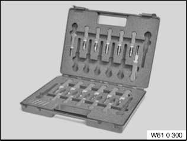
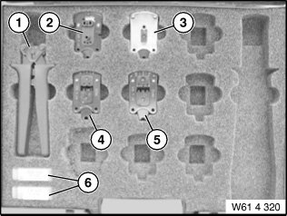
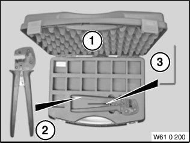
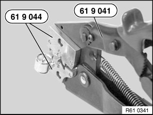
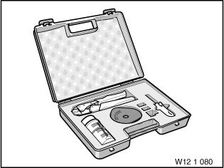
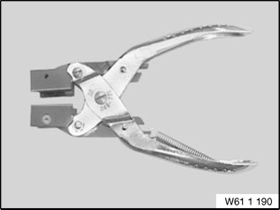

Wiring Harness: Tools and Equipment
61 13 ... Special Tools For Wiring Harness Repairs
Special tools required:

Repair range, vehicle electrical system:
- Refer to Service Information:
SI 2 04 07 341

Release and press-out tool:
- Special tool61 0 300
- Special tool 61 0 400 (MINI N12/N14)
Handling:
- Opening plug housings and removing contacts of different plug systems
Refer to Service Information:
- SI 2 05 05 217
- SI 2 05 06 294
- SI 2 08 06 312

Cutting to length and stripping insulation from cables:
Handling:
- Cutting cables to length and strip insulation

Crimping stop parts (small contacts):
- Special tool61 4 320
1. Tool without crimping head
2. Crimping head (stripping insulation and cutting fibre-optic cables to length)
3. Crimping head (crimping fibre-optic cable contacts)
4. Crimping head (crimping MQS contacts)
5. Crimping head (crimping MPQ contacts)
6. Replacement blade (face-cutting fibre-optic cables)
7. Replacement blade with tool (insulation stripping unit)
8. Universal crimping head (SI 2 04 06 293)

Crimping stop parts (large contacts):
- Special tool 61 0 200 (crimping set)
- Special tool 61 0 210 (matrix set)
- Special tool 61 0 220 (matrix set SLK 2.8)
- Special tool 61 0 230(matrix set MAK 8 / DFK4)
Handling:
- Refer to Service Information:
SI 2 02 05 194
SI 2 07 05 233

Crimping antenna elbow plugs:
- Special tool 61 9 041 (pliers)
- Special tool 61 9 044 (matrix)
Handling:
- Antenna elbow plug on radio receiver

Repair kit for ignition cables and for crimping fan connector receptacles 4 mm 2:
- Special tool12 1 080
Handling:
- Crimping stop parts (contacts)

Repairing ribbon cables:
- Special tool61 1 190
Handling:
- Repairing ribbon cables